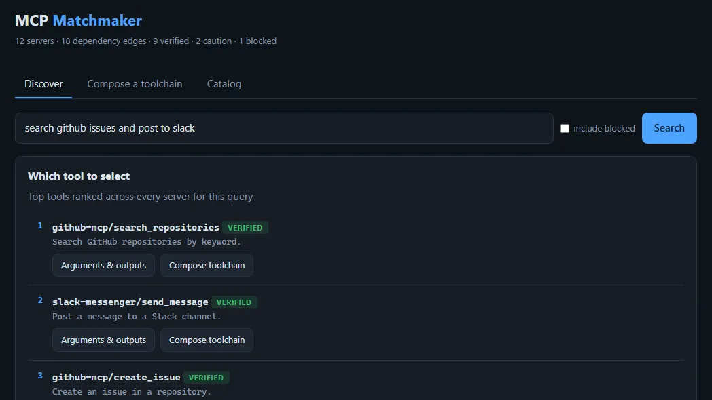

New · Agent tooling
MCP Matchmaker
Discovery platform for Model Context Protocol servers. It merges listings from several registries, ranks tools with hybrid BM25 + vector search, runs an 8-point security scan, resolves tool dependencies into runnable toolchains and generates one-paste configs for Claude Desktop, Cursor and more.
- Python
- Hybrid Search
- MCP
- Security Scanning
- 81 tests